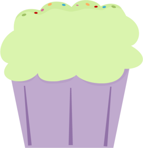

Sivuston sisällön keräämiseen on käytetty apuna Tampereen yliopiston Käyttöliittymien perusteet -kurssin kurssimateriaalia sekä useita eri lähteitä.
Taustaa -sivun sisältöä on kerätty mm. Hongkiat Limin kirjoittamasta blogitekstistä sekä Jacob Guben artikkelista.
Esimerkit -sivun tutoriaali pohjautuu Hongiat-blogin tutoriaaliin ja apua on etsitty myös W3Schools-sivustolta.
Sivun ulkosivun väripalettiin on käytetty pohjana ColourLovers-sivun väripalettia, johon on lisätty päälle paljon omia sävyjä. Sivustolla käytetyt Hannu ja Kerttu -aiheiset kuvitukset sekä taustakuva ovat MyCuteGraphics-sivulta.
